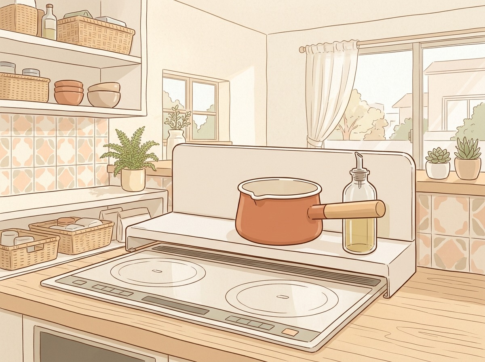

排気口カバーラックの選び方
狭いキッチンで失敗しない4つのポイント
コンロ奥の排気口は油はねや食材くずで汚れやすい場所です。排気口カバーを置けば汚れを防げるうえ、上に調味料や鍋を置けるので、作業台が狭いキッチンでは貴重なスペースになります。選ぶときに見ておきたいポイントをまとめました。
※本記事にはプロモーション（楽天・Yahoo!ショッピングのアフィリエイト）を含みます。価格・レビューは販売ページの情報です。
- 排気口カバーを選ぶ前に測っておきたい場所
- 耐荷重・素材・奥行きの見方
- 置き方別に選んだ排気口カバー4つ
HOW TO CHOOSE選び方のポイント
1コンロ幅と排気口の高さを測る
まずコンロの幅と排気口の高さを確認する。
排気口カバーは「60cmコンロ用」「75cmコンロ用」のようにサイズが分かれているものが多く、商品によっては排気口の高さの上限も決まっています。賃貸の備え付けコンロは型番が分かりにくいこともあるので、メジャーでコンロの幅と排気口の高さを測ってから選ぶと安心です。幅を伸縮して調整できるタイプもあります。
2置きたい物から耐荷重を見る
上に置く物の重さと耐荷重を照らし合わせる。
調味料を数本置くだけか、熱い鍋やフライパンまで一時置きしたいかで、必要な耐荷重は変わります。中央と端で耐荷重が違う商品や、伸縮して広げた部分だけ耐荷重が小さくなる商品もあるので、数値は細かく確認しておきましょう。
3奥行きと棚の有無で置ける量を決める
作業スペースを狭めない奥行きを選ぶ。
フラットタイプは高さが低く、調理中に鍋が当たりにくいのが特長です。奥行きを伸ばせるタイプなら置ける物が増え、棚付きなら調味料を立てて並べられます。狭いキッチンでは、手前にどれだけ出てくるかも合わせて考えると、使いにくくなる失敗を防げます。
4素材とお手入れ方法を確認する
耐熱温度と洗い方で素材を選ぶ。
ステンレスとスチール（塗装）では耐熱温度が違う商品もあります。毎日使う場所なので、丸洗いできるか、継ぎ目のない一体型かもチェックしたいところです。食洗機に対応していない商品もあるので、洗い方は事前に確認しておきましょう。
PICKSタイプ別の候補
| タイプ | 価格の目安 | こんな人に |
|---|---|---|
| フラット | 3,380円 | 素材や耐荷重の数値を比べて選びたい人 |
| 奥行伸縮 | 5,990円 | コンロ奥に鍋やフライパンを一時置きしたい人 |
| 棚付き | 2,970円 | 調味料の置き場が足りず、コンロ奥を収納に使いたい人 |
| 一枚板 | 2,099円 | 手ごろな価格でコンロ奥を整えたい人 |
 フラット
フラットフラット排気口カバー（日本製・ステンレス/スチール）
- 燕三条製、ステンレスとスチールから選べる
- 60cm・75cmの2サイズ、高さ約2.5cm
- 一体構造で丸洗いできる
こんな人に：素材や耐荷重の数値を比べて選びたい人
3,380円レビュー27,120件 ★4.752026/10/11時点・価格は変わることがあります
PR楽天で見る ↗Yahoo!で探すAmazonで探す 奥行伸縮
奥行伸縮奥行伸縮タイプの排気口カバー
- 奥行きをスライドして調節できる
- 耐荷重20kg、本体の耐熱温度は200℃
- グリル使用時は縮めて排気口をあける
こんな人に：コンロ奥に鍋やフライパンを一時置きしたい人
5,990円レビュー7,398件 ★4.672026/10/11時点・価格は変わることがあります
PR楽天で見る ↗Yahoo!で探すAmazonで探す 棚付き
棚付き棚付き伸縮排気口カバー
- ガード付きの棚に調味料やスパイスを置ける
- スライド式で排気口の幅に合わせて伸縮
- ホワイトとブラックの2色
こんな人に：調味料の置き場が足りず、コンロ奥を収納に使いたい人
2,970円レビュー1,235件 ★4.632026/10/11時点・価格は変わることがあります
PR楽天で見る ↗Yahoo!で探すAmazonで探す 一枚板
一枚板スチール製フラット排気口カバー
- スチールの一枚板で拭き掃除や丸洗いができる
- マットな質感で、白と黒から選べる
- 組み立ても取付工事も不要で置くだけ
こんな人に：手ごろな価格でコンロ奥を整えたい人
2,099円レビュー3,147件 ★4.742026/10/11時点・価格は変わることがあります
PR楽天で見る ↗Yahoo!で探すAmazonで探す排気口カバーは、サイズと耐荷重さえ合っていれば置くだけで使えます。まずはコンロの幅と排気口の高さを測って、上に何を置きたいかを考えてから選んでみてください。